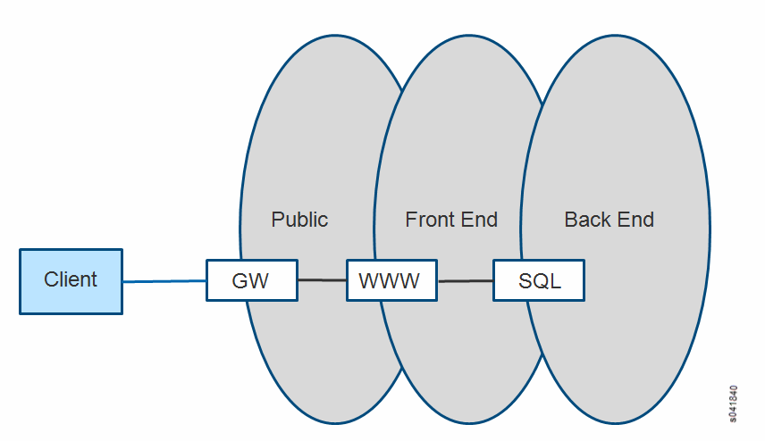
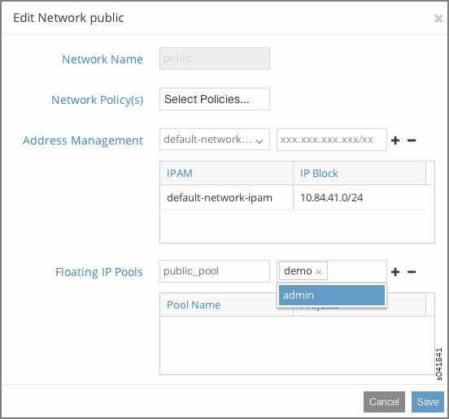
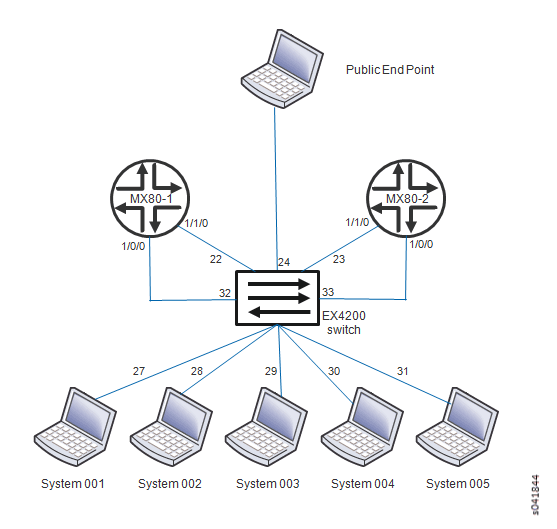

A common requirement for a cloud tenant is to create a tiered
web application in leased cloud space. The tenant enjoys the favorable
economics of a private IT infrastructure within a shared services
environment. The tenant seeks speedy setup and simplified operations.
The following example shows how to set up a simple tiered web
application using Contrail. The example has a web server that a user
accesses by means of a public floating IP address. The front-end web
server gets the content it serves to customers from information stored
in a SQL database server that resides on a back-end network. The web
server can communicate directly with the database server without going
through any gateways. The public (or client) can only communicate
to the web server on the front-end network. The client is not allowed
to communicate directly with any other parts of the infrastructure.
See Figure 1.
Figure 1: Simple Tiered Web Use Case

Example: Setting Up Virtual Networks for a Simple Tiered Web
Application
This example provides basic steps for setting up a simple
multi-tier network application. Basic creation steps are provided,
along with links to the full explanation for each of the creation
steps. Refer to the links any time you need more information about
completing a step.
Working with a system that has the Contrail software installed
and provisioned, create a project named demo.
In the demo project, create three virtual networks:
A network named public with IP address 10.84.41.0/24
This is a special use virtual network for floating IP addresses—
it is assigned an address block from the public floating address pool
that is assigned to each web server. The assigned block is the only
address block advertised outside of the data center to clients that
want to reach the web services provided.
A network named frontend with IP address 192.168.1.0/24
This network is the location where the web server virtual machine
instances are launched and attached. The virtual machines are identified
with private addresses that have been assigned to this virtual network.
A network named backend with IP address 192.168.2.0/24
This network is the location where the database server virtual
machines instances are launched and attached. The virtual machines
are identified with private addresses that have been assigned to this
virtual network.
Create a floating IP pool named public_pool for the public network within the demo project;
see Figure 2.Figure 2: Create Floating IP Pool

Allocate the floating IP pool public_pool to
the demo project; see Figure 3.Figure 3: Allocate Floating IP
Verify that the floating IP pool has been allocated; see Configure > Networking > Allocate Floating IPs.
Create a policy that allows any host to talk to any host
using any IP address, protocol, and port, and apply this policy between
the frontend network and the backend network.
This now allows communication between the web servers in the
front-end network and the database servers in the back-end network.
Launch the virtual machine instances that represent the
web server and the database server.Note
Your installation might not include the virtual machines
needed for the web server and the database server. Contact your account
team if you need to download the VMs for this setup.
On the Instances tab for this project, select Launch Instance and for each instance that you launch, complete
the fields to make the following associations:
Web server VM: select frontend network and
the policy created to allow communication between frontend and backend networks. Apply the floating IP address pool
to the web server.
Database server VM: select backend network
and the policy created to allow communication between frontend and backend networks.
Verifying the Multi-Tier Web Application
Verify your web setup.
To demonstrate this web application setup, go to the client
machine, open a browser, and navigate to the address in the public network that is assigned to the web server in the frontend network.
The result will display the Contrail interface with various
data populated, verifying that the web server is communicating with
the database server in the backend network and retrieving
data.
The client machine only has access to the public IP address.
Attempts to browse to any of the addresses assigned to the frontend network or to the backend network should fail.
Sample Addressing Scheme for Simple Tiered Web Application
Use the information in Table 1 as a guide for addressing devices in the simple tiered web example.
Table 1: Sample Addressing Scheme for Example
System Name
Address Allocation
System001
10.84.11.100
System002
10.84.11.101
System003
10.84.11.102
System004
10.84.11.103
System005
10.84.11.104
MX80-1
10.84.11.253
10.84.45.1 (public connection)
MX80-2
10.84.11.252
10.84.45.2 (public connection)
EX4200
10.84.11.254
10.84.45.254 (public connection)
10.84.63.259 (public connection)
frontend network
192.168.1.0/24
backend network
192.168.2.0/24
public network (floating address)
10.84.41.0/24
Sample Physical Topology for Simple Tiered Web Application
Figure 4 provides a guideline diagram
for the physical topology for the simple tiered web application example.
Figure 4: Sample Physical Topology for Simple
Tiered Web Application

Sample Physical Topology Addressing
Figure 5 provides a guideline
diagram for addressing the physical topology for the simple tiered
web application example.